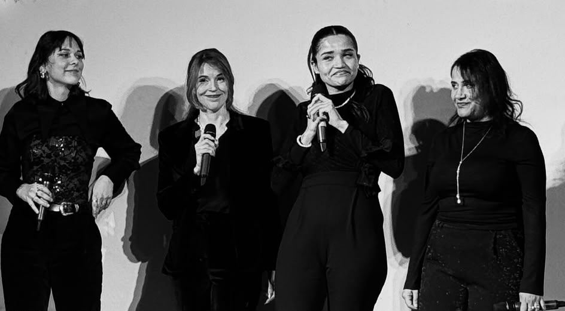
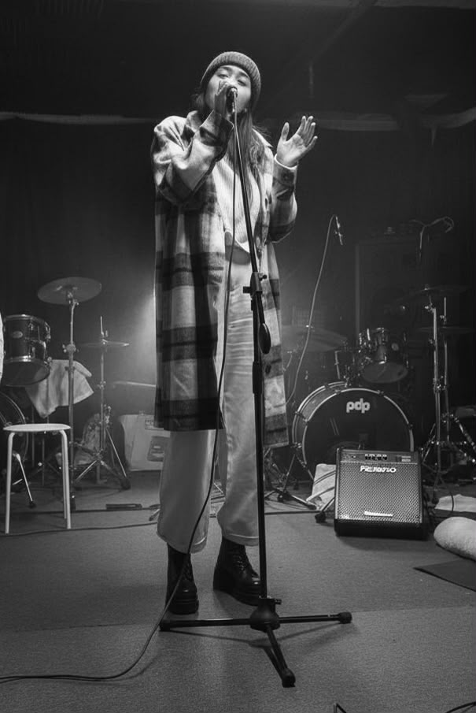
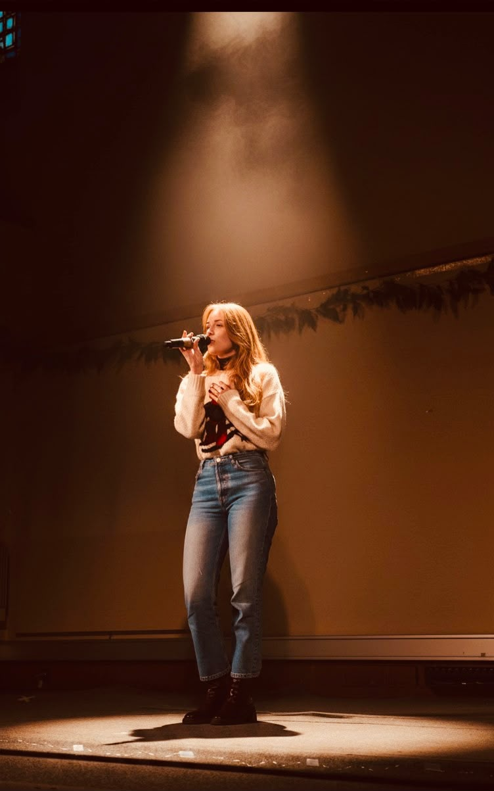
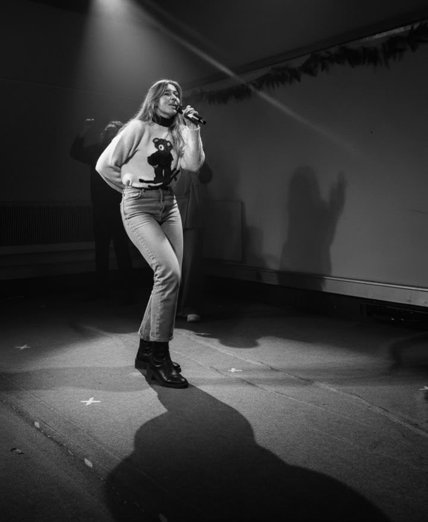
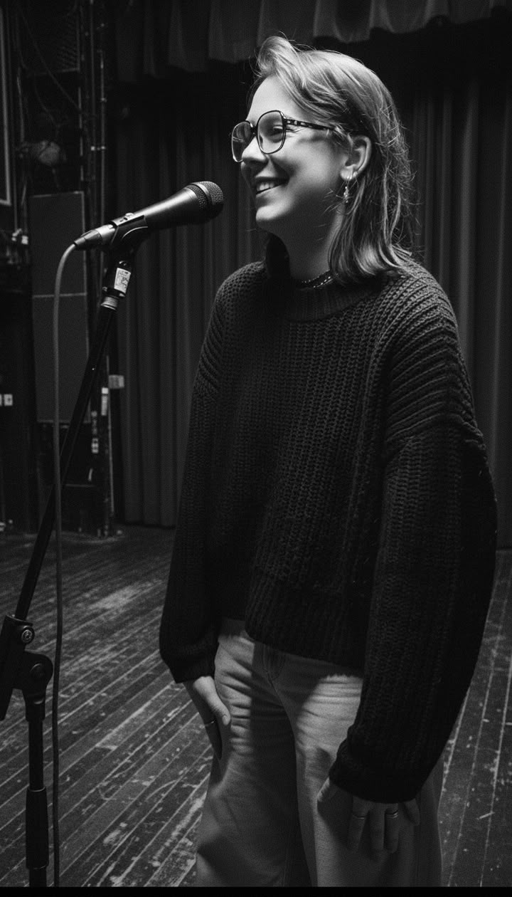

The artists
Who We Are
Expressive Singing is not a list of names — it is a family of voices. We come from different worlds: teachers and performers, beginners and lifelong singers, people shaped by different cultures, languages and professions. What we share is simple — a love of singing together, and the feeling of having finally found a place where every voice belongs.
Here, the free expression and creativity of each person is a right. We welcome diversity, we listen, and we make the practice of singing a tool for confidence, personal growth and genuine connection between people. Around these values, strangers become a community — and a community becomes a family.





Who guides us
The Committee

Founder & Artistic Director
Imane El Baladi
Singer, vocal coach and creator of Expressive Singing — a unique approach blending voice, emotion, body and imagination. With a background in mediation sciences and a Master in Artistic Vocology, she guides children and adults to explore their voice as a powerful tool for expression and connection.

Committee Member
Moniah El Shikh
Trained in both classical voice and somatic movement, Moniah guides singers to connect breath, body and emotion into a unified, powerful presence.

President
Davide Schiavone
Leads the development of Expressive Singing, building bridges between artistic excellence and community impact.